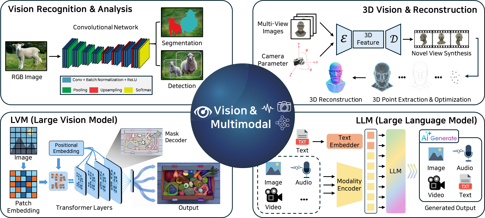

Research Direction 03
Vision & Multimodal Intelligence

We develop robust visual representations and multimodal learning methods that combine visual, linguistic, and structured information. Our research covers vision–language models (VLMs), fine-grained recognition, and reliable perception under distribution shifts and challenging conditions. We also study training strategies and model architectures that improve generalization, robustness, and interpretability across diverse real-world environments.
Research Topics
Vision-Language Models (VLMs)
Multimodal Representation
Fine-Grained Recognition
Robust & Trustworthy Perception